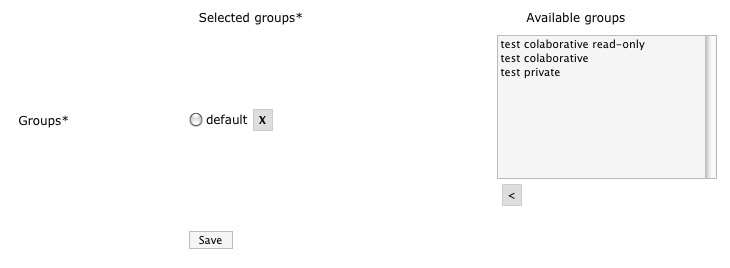

OMERO.webadmin User Guide
| Table of Contents | Up: 4. How to do ...? | Previous: 4.7. How to deactivate an account? | Next: 4.9. How to set user as administrator? | Down: 5. Troubleshooting |
4.8. How to modify the list of groups the user belongs to?
A user can belong to more than one group. How create a group you can find on section Section 4.11. A user may belong to one or more groups. To define the list of groups user is member of select them from the Available groups box and click button [<] to move them to the Selected groups area. Once groups are chosen select one to choose default group.

|
| Figure 4.8-1 : Change user groups. |
To remove the user from the groups is a member of, use [X] remove button.
|  |
| Figure 4.8-2 : Delete user from group. |